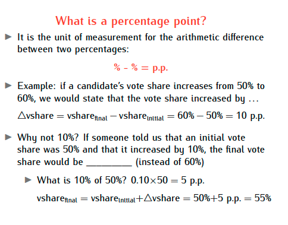
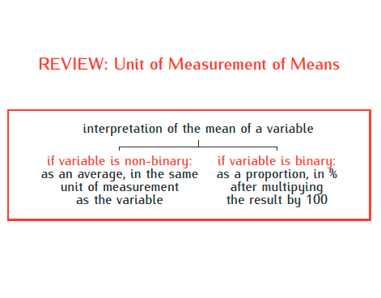
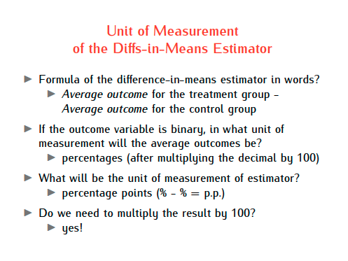
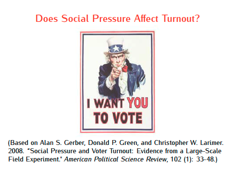
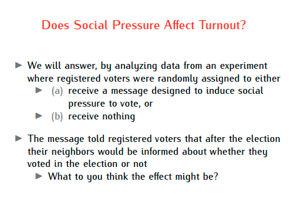
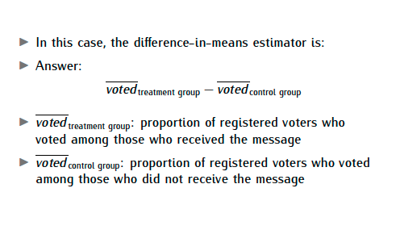
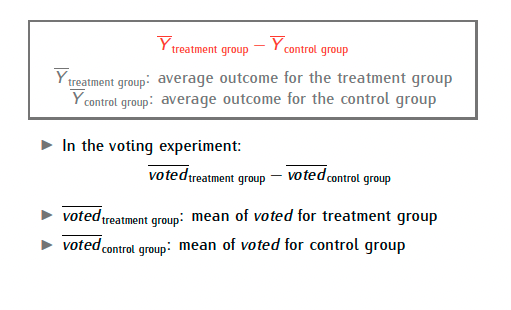
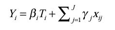
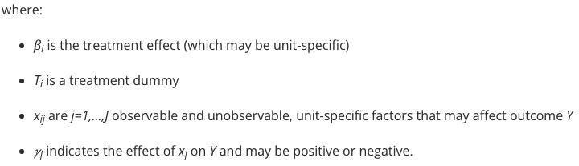
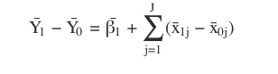

Lab 2
Nini Petriashvili
October 09, 2025
Plan for today
What is a percentage point?

REVIEW: Unit of Measurement of Means



Does Social Pressure Affect Turnout?


What do we need to calculate?

difference-in-means


Randomized experiments
Estimation
Formally, we can write the outcome of each unit in either the treatment or control group using the following notation (Deaton & Cartwright, 2018):


Average treatment effects (ATE)
Researchers are typically interested in the average treatment effect (ATE), which is the average causal effect of a variable (e.g. a message to induce social pressure) on an outcome variable (e.g. voting) for the entire study population.
In the classical experimental design the ATE can be estimated as the difference in means of the outcome between the treatment and control groups.
Formally, we can take the average of the treatment group (\(T=1\)) and the control group (\(T=0\)) to estimate the ATE:

\(\hat{\beta}{1}\) is the average treatment effect; the subscript indicates that this estimate calculates the average of the treatment effects in the treatment group. The second term is the “error term” of the ATE estimate: the average difference between treatment and control group that is unrelated to treatment (from observable and unobservable differences).
What does randomization do?
Conceptually, randomization simply means that every experimental unit has the same probability of being assigned to a given group.
Randomized assignment of treatment and control ensures that the \(\hat{x}_{j}\) are uncorrelated with the treatment assignment, and so the ATE estimate is expected to be unbiased.
If we were to repeat the experiment with many \(N\)-sized samples, the average error term would be zero and and the average of \(\hat{\beta}{1}\) would be equal to the ATE.
How it works?
In any given sample, the error term will likely not be zero and \(\hat{\beta}{1}\) will not be equal to the ATE. However, as the sample size \(N\) grows, the variance of both around their true means decreases. As a result, a larger sample size increases the statistical power for tests about the ATE.
In most settings, the elements of the error term are not known or completely observed which makes randomization valuable as it ensures that the error term is zero in expectation.
Balance means that the distribution of those \(\hat{x}_{ij}\) in the treatment group is similar to that in the control group.
Randomization doesn’t guarantee perfect balance. It guarantees no systematic bias.
Group Means in Voting.csv
Dataset: voting.csv